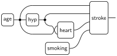
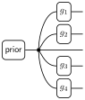
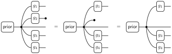
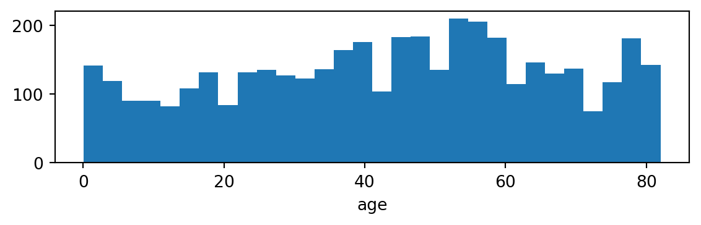

matplotlib — for plotting (used in the optional appendix).
If any of these are not installed, run pip install torch pandas matplotlib in your terminal.
So far in the course, we built generative models by specifying the probabilities by hand, using physical laws (heredity) or domain intuition (fraud). In practice, we rarely know the right probabilities. Instead, we learn them from data.
This exercise bridges the gap. We will:
Design two competing graphical models for stroke prediction: a causal model and a naive Bayes model.
Estimate their kernels from a real medical dataset.
Sample and predict: sample from the joint distribution and use rejection sampling to compute predictions from the causal model, and compare with the naive Bayes model’s exact posterior.
Evaluate both models on held-out test data.
The key insight is that model structure matters: even with the same data, different graphical models can give dramatically different predictions, and understanding why teaches us about the trade-offs between model complexity and data requirements.
The dataset
We use the Stroke Prediction Dataset, which contains medical records for 5110 patients. We have split the data into a training set (4088 patients) and a test set (1022 patients).
The original dataset has been pre-processed into five discrete variables:
If you want to learn how the data was prepared from the raw dataset (including loading, exploring, binning, and encoding), see the optional appendix.
Tasks
Task 1. Design a graphical model
Before touching the data, we think about model structure: which variables should depend on which? We will compare two models:
Causal model
The first model follows the causal story of how strokes arise. We place each variable downstream of the factors that cause it: age and lifestyle come first, they lead to chronic conditions like hypertension and heart disease, and all of these jointly influence stroke risk. This mirrors how a physician thinks about disease progression, and it lets the model capture the real dependencies between risk factors.
Task 1a. Draw the string diagram for this model. Then explain briefly why each dependency might make sense from a medical perspective. Why is smoking a root variable rather than a child of age? Why does stroke depend on all four other variables?
TipSolution
We start by drawing the string diagram. For simplicity, we only output the stroke variable.

Age and smoking are modeled as root variables (generators) because they are largely exogenous (not caused by the other medical conditions in the model). While smoking rates do vary with age in the general population, this is a demographic correlation rather than a causal effect: age does not cause someone to smoke in the way it causes hypertension. Treating them as independent roots keeps the model simple.
Hypertension depends on age because blood pressure tends to rise with age due to arterial stiffening, one of the strongest and best-established risk factors.
Heart disease depends on age and hypertension because cardiovascular damage accumulates over time, and chronically high blood pressure is a primary driver of heart disease.
Stroke depends on all four variables. Age, hypertension, and heart disease are well-established direct risk factors for stroke. Smoking contributes independently: it damages blood vessels and promotes clotting regardless of whether it has already caused hypertension or heart disease.
Note that smoking does not appear as an input to the hypertension or heart disease kernels, even though it contributes to both in reality. Including it would increase kernel sizes without much benefit given our limited data.
The price of this richer structure shows up at estimation time. The stroke kernel has \(3 \times 2 \times 2 \times 3 = 36\) input combinations, and we need to estimate a separate conditional distribution for each one from our ~4000 training patients. The data is split across all 36 cells, so some combinations will have very few observations, leading to noisy estimates.
This is a general tension with causal models: the more faithfully we represent dependencies, the more parameters we need, and the more data it takes to estimate them reliably. Later in the course, we will see ways to parametrize kernels more compactly, which will largely alleviate this problem.
Naive Bayes model
A classic simplification is the naive Bayes model, which reverses the direction: instead of features causing stroke, we treat stroke as the root and model each feature as depending only on stroke status:
A generator\(\mathsf{prior} : I \kernel \text{Stroke}\) producing the stroke variable.
Four feature kernels\(g_1, \ldots, g_4\), each mapping stroke status to one feature:
This may look strange at first: stroke doesn’t cause someone to be old or to smoke. But remember that a string diagram defines a joint distribution over all its output variables via composition of kernels — it does not have to follow the causal direction. The naive Bayes decomposition is a perfectly valid generative model for the joint distribution over all five variables; it just isn’t causally faithful.
The big advantage of this approach is that every kernel is tiny: each one conditions on stroke status alone (\(|\text{Stroke}| = 2\)), so estimation requires only two conditional distributions regardless of how many features the model has. This sidesteps the data-fragmentation problem of the causal model entirely.
The downside is the independence assumption baked into the structure. The naive Bayes model assumes that all features are conditionally independent given stroke status. This is a strong assumption and rarely satisfied in practice. For instance, age causes hypertension, which in turn causes heart disease, so these features are far from independent even if stroke status is known. We will see the effect of this in Task 3.
Task 1b. Draw the string diagram for the naive Bayes model.
TipSolution

Task 1c. Compute the joint distribution\(p(s, a, k, h, d)\) represented by the naive Bayes string diagram, writing \(s\) for stroke, \(a\) for age, \(k\) for smoking, \(h\) for hypertension, and \(d\) for heart disease. Evaluate the diagram using the composition rules from the course notes.
NoteHint
Interpret the diagram as iterated copy-composition: the generator \(\mathsf{prior}\) produces a measure on \(\text{Stroke}\), which is then copy-composed with each feature kernel in turn. Equivalently, you can derive the same factorization by repeated application of the chain rule.
TipSolution
We evaluate this as iterated copy-composition (equivalently, by repeated application of the chain rule). Copy-composing the generator \(\mathsf{prior}\) with \(g_1 : \text{Stroke} \kernel \text{Age}\) gives: \[
(\mathsf{prior} \odot g_1)(s, a) = \mathsf{prior}(s) \cdot g_1(a \mid s).
\]
Copy-composing again with \(g_2 : \text{Stroke} \kernel \text{Smoking}\): \[
(\mathsf{prior} \odot g_1 \odot g_2)(s, a, k) = \mathsf{prior}(s) \cdot g_1(a \mid s) \cdot g_2(k \mid s).
\]
Repeating for all four feature kernels: \[
p(s, a, k, h, d) \;=\; \mathsf{prior}(s) \;\cdot\; g_1(a \mid s) \;\cdot\; g_2(k \mid s) \;\cdot\; g_3(h \mid s) \;\cdot\; g_4(d \mid s).
\]
This is the naive Bayes factorization: the joint distribution is a product of the prior \(\mathsf{prior}(s)\) and four independent likelihoods, each conditioned only on stroke status.
Task 1d. Using the joint from Task 1c, derive the posterior\(p(S = 1 \mid \bar{a}, \bar{k}, \bar{h}, \bar{d})\), the probability of stroke given observed feature values.
TipSolution
Starting from the joint: \[
p(s, a, k, h, d) = \mathsf{prior}(s) \cdot g_1(a \mid s) \cdot g_2(k \mid s) \cdot g_3(h \mid s) \cdot g_4(d \mid s),
\] we condition on all observed values and normalize over stroke status \(s\): \[
p(s \mid \bar{a}, \bar{k}, \bar{h}, \bar{d})
\;=\; \frac{\mathsf{prior}(s) \cdot g_1(\bar{a} \mid s) \cdot g_2(\bar{k} \mid s) \cdot g_3(\bar{h} \mid s) \cdot g_4(\bar{d} \mid s)}{\sum_{s'} \mathsf{prior}(s') \cdot g_1(\bar{a} \mid s') \cdot g_2(\bar{k} \mid s') \cdot g_3(\bar{h} \mid s') \cdot g_4(\bar{d} \mid s')}.
\]
Task 1e. What happens to the posterior formula when some features are not observed?
This situation arises naturally in a diagnostic setting: a doctor may know a patient’s age and blood pressure but not yet have their full medical history. A useful model should still be able to estimate stroke risk from whatever information is currently available.
NoteHint
Think about what happens in the string diagram when you delete an output wire: copying then deleting gives the identity (\(\cp \then \del = \id\)), and composing a kernel with delete gives delete (\(g_j \then \del = \del\)), since kernel rows sum to 1.
TipSolution
Marginalizing over an unobserved output \(X_j\) in the string diagram corresponds to deleting that wire. But deleting the output of \(g_j\) is the same as deleting its input, since \(g_j\) is a probability kernel. Finally, copying then deleting does nothing, so the entire branch for an unobserved feature vanishes. This is illustrated for \(X_2\) in the diagram below:

If the observed features are \(\{j_1, \ldots, j_m\}\), the posterior simplifies to: \[
p(s \mid \bar{x}_{j_1}, \ldots, \bar{x}_{j_m})
\;=\; \frac{\mathsf{prior}(s) \prod_{i=1}^{m} g_{j_i}(\bar{x}_{j_i} \mid s)}{\sum_{s'} \mathsf{prior}(s') \prod_{i=1}^{m} g_{j_i}(\bar{x}_{j_i} \mid s')}.
\]
Unobserved features simply drop out of the product. This is a key advantage of the naive Bayes model: all marginals can be computed as a simple product of the observed features. In contrast, the marginals of the causal model do not have this simple form. They require taking into account all kernels and summing over unobserved variables.
Task 2. Estimate the kernels
Each box in the string diagrams represents a kernel \(f : X_1 \otimes \cdots \otimes X_k \kernel Y\). To use the model, we estimate every kernel from training data: count how often each output value \(y\) occurs for each input combination \((x_1, \ldots, x_k)\), add 1 for Laplace smoothing, and normalize: \[
\hat{f}(y \mid x_1, \ldots, x_k) \;=\; \frac{\#\{i : Y_i = y,\; X_{1,i} = x_1,\; \ldots,\; X_{k,i} = x_k\} + 1}{\#\{i : X_{1,i} = x_1,\; \ldots,\; X_{k,i} = x_k\} + |Y|}
\]
where \(|Y|\) is the number of output categories. Laplace smoothing ensures no outcome receives probability zero. Without it, a single unseen combination would force the entire product to zero. We will see later in the course that this has a Bayesian justification: it corresponds to placing a uniform prior on the probabilities.
Task 2a. Load the training data from stroke_train_prepared.csv. How many patients are in the dataset? How many had a stroke? Are there any missing values?
We use pandas to work with tabular data (see the 10-minute intro if you haven’t used it before). The key operations:
Task 2b (optional — challenging). Implement a function estimate_kernel that takes the training DataFrame and estimates a single kernel using the Laplace-smoothed formula above. If you prefer, you may skip this task and use the implementation provided in the solution below.
The arguments are:
df — the training DataFrame.
input_cols — a list of column names for the input (parent) variables, e.g. ["age"] or ["age", "hypertension"]. For a generator (no parents), pass an empty list [].
output_col — the column name of the output variable, e.g. "hypertension".
input_sizes — a list giving the number of categories for each input variable, e.g. [3] for age (young/middle/senior) or [3, 2] for age × hypertension. Empty list [] for a generator.
n_output — the number of output categories, e.g. 2 for hypertension (no/yes).
The function should return two things:
A kernel tensor whose entry at position [x1, ..., xk, y] is the estimated probability \(\hat{f}(y \mid x_1, \ldots, x_k)\). For a generator, this is just a probability vector of length n_output.
A counts tensor recording how many training patients fell into each input combination (before smoothing). For a generator, just return the total count as an integer.
NoteHint: Step-by-step approach
Generator case (no inputs): Count how often each output value appears (e.g., how many patients had stroke = 0 vs. stroke = 1). Apply Laplace smoothing and normalize to get a probability vector.
Kernel case (one or more inputs):
Create a count tensor of zeros with shape (*input_sizes, n_output). For example, estimate_kernel(df, ["age"], "hypertension", [3], 2) gives shape (3, 2) — one row per age category, one column per hypertension status.
Count occurrences. Loop over the rows of the DataFrame. For each row, read the input and output values and increment the corresponding entry. For instance, a row with age=2, hypertension=1 increments counts[2, 1].
Apply Laplace smoothing. Add 1 to every cell of the count tensor.
Normalize. Divide each row by its sum so the entries along the output dimension sum to 1. This gives the estimated conditional probabilities.
The counts tensor (before smoothing) records how many data points informed each row — useful for spotting unreliable estimates.
TipSolution
def estimate_kernel(df, input_cols, output_col, input_sizes, n_output):"""Estimate a kernel from data with Laplace smoothing."""# Generator case: no inputs, just count output valuesiflen(input_cols) ==0: counts = torch.zeros(n_output)for y inrange(n_output): counts[y] = (df[output_col] == y).sum() total =int(counts.sum().item())return (counts +1) / (total + n_output), total# Kernel case: count (input, output) combinations shape =list(input_sizes) + [n_output] counts = torch.zeros(shape)for _, row in df.iterrows(): inputs = [int(row[c]) for c in input_cols] output =int(row[output_col]) counts[tuple(inputs + [output])] +=1# Laplace smoothing: add 1 to every cell, then normalize input_counts = counts.sum(dim=-1) # has shape (*input_sizes) smoothed = counts +1# unsqueeze restores the output dim so we can divide each row by its total kernel = smoothed / (input_counts.unsqueeze(-1) + n_output)return kernel, input_counts.int()
Task 2c. Use estimate_kernel to estimate every kernel in both models (causal and naive Bayes). For each kernel, print the estimated conditional distribution and the number of training cases per input combination.
NoteHint
First, define the number of categories for each variable:
Call estimate_kernel once for every box in each string diagram. Store the results in a dictionary for each model.
For the causal model, the structure from Task 1a tells you which columns are inputs to each kernel. For example, the hypertension kernel takes age as input:
The stroke kernel has shape \((3, 2, 2, 3, 2)\) — one dimension per input variable, plus the output. Printing the full tensor would be unwieldy, so we inspect a single slice and the training counts:
Some input combinations have very few training cases. When there are 0 cases, the estimate defaults to a uniform distribution due to Laplace smoothing, meaning the model will make a 50/50 guess for stroke risk.
Notice that every NB kernel is estimated from the same two groups: all ~3889 non-stroke and all ~199 stroke patients.
Task 2d. Compare the training counts between the two models. How many data points inform each row of the causal stroke kernel versus each row of a naive Bayes feature kernel? What are the consequences for estimation reliability?
TipSolution
The naive Bayes model conditions every feature kernel on stroke alone (\(|S| = 2\)), so each row is estimated from all ~3889 non-stroke or all ~199 stroke patients.
The causal model’s stroke kernel conditions on four parent variables with \(3 \times 2 \times 2 \times 3 = 36\) combinations, sharing the same ~4000 patients unevenly. Some combinations may have fewer than 20 data points, making those estimates unreliable.
The trade-off: the naive Bayes model has stable estimates but assumes features are conditionally independent given stroke, which is wrong (e.g., age causes hypertension, which causes heart disease). The causal model captures these dependencies but pays a price in data requirements.
Task 3. Sample and predict
We now use the estimated models to predict stroke risk for individual patients. For the naive Bayes model, we derived a closed-form posterior in Task 1d, so we can compute exact predictions.
Task 3a. Implement a function predict_nb that computes \(p(s=1 \mid \text{evidence})\) using the naive Bayes posterior from Task 1d. The function should accept a dictionary of observed features, allowing partial evidence (unobserved features are simply not listed).
NoteHint
For each stroke status \(s \in \{0, 1\}\), compute the unnormalized score \[\text{score}(s) = \mathsf{prior}(s) \cdot \prod_{j \in \text{observed}} g_j(\bar{x}_j \mid s).\] Then normalize: \(p(s=1 \mid \text{evidence}) = \text{score}(1) \,/\, (\text{score}(0) + \text{score}(1))\).
TipSolution
def predict_nb(evidence):"""Compute P(stroke=1 | evidence) using the naive Bayes model. Args: evidence: dict mapping feature names to integer values, e.g. {"age": 2, "hyp": 1}. Unobserved features omitted. Returns: P(stroke=1 | evidence) as a float. """ prior, _ = nb["prior"] score = prior.clone() # shape (2,): one entry per stroke statusfor name, value in evidence.items(): kernel, _ = nb[name] score *= kernel[:, value] # multiply by g_j(value | s) for each sreturn (score[1] / score.sum()).item()
For the causal model, exact conditioning on partial evidence is harder since it requires marginalizing over unobserved variables. Instead, we use a rejection sampling approach. This works for any graphical model regardless of its structure.
Task 3b. Implement a function sample_causal that draws N samples from the joint distribution of the causal model by sampling according to the structure of the string diagram. Sample each variable in left-to-right order, feeding parent values into child kernels. Use torch.distributions.Categorical to sample from each kernel.
NoteHint
Generators (no parents) are probability vectors, so you can sample directly:
Downstream variables have parent inputs. Index into the kernel tensor with the parent samples to select the right conditional distribution for each of the N samples:
Here hyp_k[age] gathers one row per sample (shape (N, 2)), and Categorical samples from each row. For multiple parents, use multiple indices: heart_k[age, hyp].
Process all five variables according to the order in the string diagram, and return a dictionary mapping variable names to tensors of shape (N,).
TipSolution
from torch.distributions import Categoricaldef sample_causal(N):"""Draw N samples from the causal model by sampling according to the string diagram. Args: N: number of samples. Returns: dict mapping variable names to integer tensors of shape (N,). """ age_k, _ = causal["age"] smoking_k, _ = causal["smoking"] hyp_k, _ = causal["hyp"] heart_k, _ = causal["heart"] stroke_k, _ = causal["stroke"]# Generators (no parents) age = Categorical(probs=age_k).sample((N,)) smoking = Categorical(probs=smoking_k).sample((N,))# Downstream variables (index into kernel with parent values) hyp = Categorical(probs=hyp_k[age]).sample() heart = Categorical(probs=heart_k[age, hyp]).sample() stroke = Categorical(probs=stroke_k[age, hyp, heart, smoking]).sample()return {"age": age, "smoking": smoking, "hyp": hyp,"heart": heart, "stroke": stroke}
Each line mirrors a box in the string diagram: generators produce root variables, and each downstream kernel receives its parent values as indices. The vectorized indexing hyp_k[age] selects one row per sample, so no Python loop is needed.
Task 3c. Use rejection sampling to estimate \(p(s=1 \mid \text{evidence})\) from the causal model, and compare with the exact naive Bayes predictions.
The following rejection_sample function is similar to the one from Exercise 2. The main difference is that it takes a sample_fn argument, making it reusable across different models.
NoteProvided: rejection_sample function
def rejection_sample(sample_fn, evidence, target, N):"""Estimate P(target | evidence) by rejection sampling. Args: sample_fn: function that takes N and returns a dict mapping variable names to tensors of shape (N,). evidence: dict mapping variable names to observed values, e.g. {"age": 2, "hyp": 1}. target: dict mapping variable names to target values, e.g. {"stroke": 1}. N: number of samples to draw. Returns: estimate: estimated probability P(target | evidence). acceptance_rate: fraction of samples matching the evidence. """ samples = sample_fn(N)# Keep samples that match all evidence mask = torch.ones(N, dtype=torch.bool)for var, val in evidence.items(): mask &= samples[var] == val n_accepted = mask.sum().item() acceptance_rate = n_accepted / Nif n_accepted ==0:returnfloat("nan"), 0.0# Among accepted samples, compute fraction matching target target_mask = torch.ones(n_accepted, dtype=torch.bool)for var, val in target.items(): target_mask &= samples[var][mask] == valreturn target_mask.float().mean().item(), acceptance_rate
Compute predictions for the following patient profiles:
Scenario Causal Accept% NB (exact)
------------------------------------------------------------
A (high-risk senior) 0.2978 0.30% 0.7461
B (young healthy) 0.0020 12.93% 0.0009
C (senior smoker) 0.1558 6.63% 0.1978
Observations:
Scenario B: Both models agree on near-zero stroke risk for young healthy patients.
Scenario C (partial evidence): Both models handle this naturally. The naive Bayes formula drops unobserved features. Rejection sampling simply filters on fewer variables, so more samples are accepted.
Scenario A (the key discrepancy). The causal model predicts a substantially lower probability than the naive Bayes model.
Why? In the causal model, the rejection-sampled estimate reflects how often strokes actually occur among synthetic patients with this exact combination of risk factors.
In the naive Bayes model, each feature independently contributes a likelihood ratio favoring stroke: seniors are more likely to have strokes (age ratio), hypertensive patients are more likely (hyp ratio), patients with heart disease are more likely (heart ratio), and smokers slightly more likely (smoking ratio). These ratios multiply. But the features are correlated: age causes hypertension, which causes heart disease. The naive Bayes model counts the effect of age three times: once directly, once through its effect on hypertension, and once through its effect on heart disease. This double-counting inflates the posterior.
The causal model avoids this because its structure explicitly represents these dependencies. Hypertension is modeled as a child of age, so the stroke kernel conditions on both age and hypertension jointly — it does not treat them as independent evidence. The model “knows” that a hypertensive senior is not doubly surprising, because hypertension is expected given old age.
Acceptance rates. Notice how the acceptance rate drops as we condition on more variables (Scenario A vs. C). For rare combinations, we may need more samples to get reliable estimates. This is a fundamental limitation of rejection sampling that we will revisit later in the course.
Task 4. Evaluate on the test set
We now evaluate both models on held-out test data using log-loss (also called cross-entropy loss): \[
\mathcal{L} = -\frac{1}{T} \sum_{t=1}^{T} \log p(s_t \mid a_t, k_t, h_t, d_t),
\] where \(s_t\) is the true stroke status of test patient \(t\) and \(p(s_t \mid \ldots)\) is the probability the model assigns to the true outcome. Log-loss measures how many nats1 of surprise the model experiences on learning the true value on average. Its main value is in comparing models: a lower log-loss means one model’s predictions are closer to reality than another’s.
Task 4a. Load the test data from stroke_test_prepared.csv. For every test patient, compute the predicted stroke probability using both models, and report the log-loss for each model.
For the naive Bayes model, use predict_nb with all four features.
For the causal model, we need \(p(s \mid a, k, h, d)\) for each test patient. This value is given by the kernel \(\mathsf{stroke}(s \mid a, k, h, d)\), which is exactly what the estimated kernel stroke_k[a, h, d, k, s] provides. When we cover conditioning in graphical models later in the course, we will understand why we can ignore the rest of the diagram.
TipSolution
We begin by loading the test data and inspecting its size and stroke prevalence:
Compute log-loss for the naive Bayes model using the exact posterior:
nb_ll =0.0for _, row in test.iterrows(): a, k, h, d, s = (int(row[c]) for c in ["age", "smoking", "hypertension", "heart_disease", "stroke"]) p_nb = predict_nb({"age": a, "smoking": k, "hyp": h, "heart": d}) nb_ll -= math.log(p_nb if s ==1else1- p_nb)nb_logloss = nb_ll /len(test)
Compute log-loss for the causal model by looking up the stroke kernel directly:
stroke_k, _ = causal["stroke"]causal_ll =0.0for _, row in test.iterrows(): a, k, h, d, s = (int(row[c]) for c in ["age", "smoking", "hypertension", "heart_disease", "stroke"]) causal_ll -= math.log(stroke_k[a, h, d, k, s].item())causal_logloss = causal_ll /len(test)
Task 4b. Which model achieves lower log-loss? Can you explain why? When might you prefer one model over the other?
TipSolution
The causal model achieves a lower log-loss, meaning its predicted probabilities are closer to the true outcomes on average. This is consistent with the Task 3c observation: the naive Bayes model’s independence assumption causes it to double-count correlated risk factors, inflating stroke probabilities for high-risk patients. Since log-loss penalizes overconfident wrong predictions harshly — assigning high stroke probability to a patient who did not have a stroke incurs a large penalty — this miscalibration hurts the naive Bayes score.
When to prefer each model:
Naive Bayes is the better choice when data is limited, when simplicity matters, or when the goal is ranking patients by risk (e.g., deciding who to screen first). It’s fast, easy to implement, and its estimates are stable. It also gives exact answers via a closed-form formula and handles partial evidence naturally.
The causal model is preferable when calibrated probabilities matter (e.g., communicating risk to a patient), when you have enough data for reliable kernel estimates, or when you want to reason about interventions, e.g., “what would happen to this patient’s stroke risk if we treated their hypertension?” The causal structure supports this kind of reasoning; the naive Bayes model does not.
Optional: Data preparation
The prepared data files used in this exercise were created from the raw Stroke Prediction Dataset. The original dataset contains 11 columns including continuous variables (age, avg_glucose_level, bmi) and additional categorical variables (gender, ever_married, work_type, Residence_type). The raw data files are:
The steps below show how to go from the raw data to the prepared files used in the main exercise. We focus on the five medically relevant variables and discard the rest.
Step 1. Load and inspect the raw data
NoteHint: Working with pandas
pandas is a Python library for working with tabular data. If you’ve never used it before, there is a 10-minute introduction in the user guide. Here are the operations you will need:
Load a CSV file:pd.read_csv(path) returns a DataFrame, a table with named columns.
Inspect the first rows:df.head() shows the first 5 rows.
Number of rows:len(df) returns the number of rows.
Column data types:df.dtypes lists the type of each column.
The dataset has 4088 patients, of whom 199 (~4.9%) had a stroke. The only column with missing values is bmi (201 missing). Since we will not use bmi in this exercise, this is not a concern.
Step 2. Discretize age
The age column is continuous. Since our graphical model framework works with finite sets, we need to bin it into categories. We first look at its distribution:
TipSolution
import matplotlib.pyplot as pltfig, ax = plt.subplots(figsize=(6, 2))ax.hist(raw["age"].dropna(), bins=30)ax.set_xlabel("age")plt.tight_layout()plt.show()

Age is roughly uniformly distributed across the range. Based on standard medical thresholds, we bin into three categories:
Category
Range
Encoding
young
\([0, 35)\)
0
middle
\([35, 65)\)
1
senior
\([65, \infty)\)
2
35 separates young adults from middle-aged patients. 65 is the standard threshold for “senior” in medical literature.
The raw smoking_status column has four levels: “never smoked”, “formerly smoked”, “smokes”, and “Unknown”. We merge “formerly smoked” and “smokes” into a single “smoker” category (the distinction between current and former smokers is less important than whether a patient has any smoking history), and keep “Unknown” as a separate level, since it represents genuinely missing information.
We select the five variables, integer-encode them, and save to CSV. The binary variables hypertension, heart_disease, and stroke are already integer-encoded (0/1) in the raw data.
The same steps applied to stroke_test.csv produce stroke_test_prepared.csv.
A nat (natural unit of information) is the information-theoretic unit obtained when using the natural logarithm. One nat equals the amount of information gained by observing an event of probability \(1/e\). If we used \(\log_2\) instead, the unit would be bits.↩︎